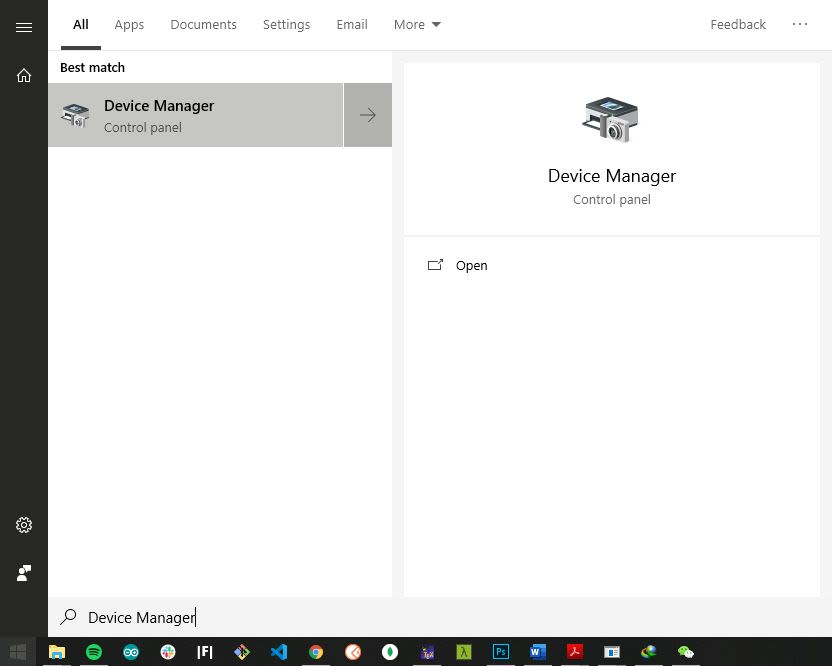

Burning Bootloader into the Device
Please use the the latest firmware for the RAK7204 LoRa Environmental Sensor accessible in this directory in order to avoid potential problems. Burning the Bootloader into the device is done as follows:
Note: Skip this section if you have a RAK7204 with V3.0.0.0 firmware or newer, for it has already a bootloader.
1 . To start with, download and install the “STM32CubeProgrammer” tool in your PC through this link or through this RAK directory.
2 . Then, configure your RAK7204 by jumping the “BOOT” pin and “VCC” pin for boot mode as the following pictures shown below:

3 . Connect your RAK7204 to your PC using the USB cable as follow:

4 . Choose the correct port number in the COM Port field. You can check this in the Device Manager.

5 . Open the “STM32CubeProgrammer” tool.
6 . Select UART type; go to COM Port and look for your RAK7204 LoRa Environmental Sensor COM Port (ex. COM5).
7 . Configure the Baud rate and Parity.

8 . Then, press the “Connect” button at the top right corner.
Warning: If there are some errors in the Log box or it can’t connect, please close the STM32CubeProgrammer and reset RAK7204, then open the STM32CubeProgrammer and connect again.

- The correct Log you should see is the information like the following picture shows:

Now, let’s start burning the bootloader into the RAK7204 LoRa Environmental Sensor.
9 . First, erase all data on the RAK7204 LoRa Environmental Sensor referred from the following picture below:

10 . Download the bootloader file accessible to this link. Then, press “Open file” and select the bootloader file:
11 . Click the “Download” button to start the burning process

12 . OK, you have successfully burned the firmware into RAK7204 LoRa Environmental Sensor!

13 . “Disconnect” and close the “STM32CubeProgrammer” tool. Then, power down and remove the connection between BOOT pin and VCC pin to let RAK7204 LoRa Environmental Sensor work in normal mode.
14 . Then, connect RAK7204 with your PC’s USB interface again.
Alright! You can now start burning the firmware into RAK7204 WisTrio LoRa Tracker.